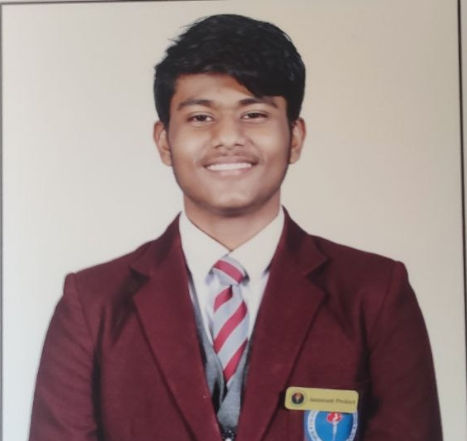

BPS Extracurriculars
Mar-2012 -- May-2024
- Head of Robotics Club 2020-2023
- Head of Cybersecurity Club 2023-2024
- 22 Medals in Swimming, participated in CBSE finals India
- Grade 8 Trinity College London certified Drummer
- 10 hours of community volunteering
- Presented robotics projects at Qatar National Library

BPS Extracurriculars
Mar-2012 -- May-2024
- Maths: XX%
- Science: XX%
- Social Science: XX%
- French: XX%
- English: XX%
- Artificial Intelligence: 96%
- Maths: XX%
- Physics: XX%
- Chemistry: 91%
- English: 96%
- Computer Science: 94%